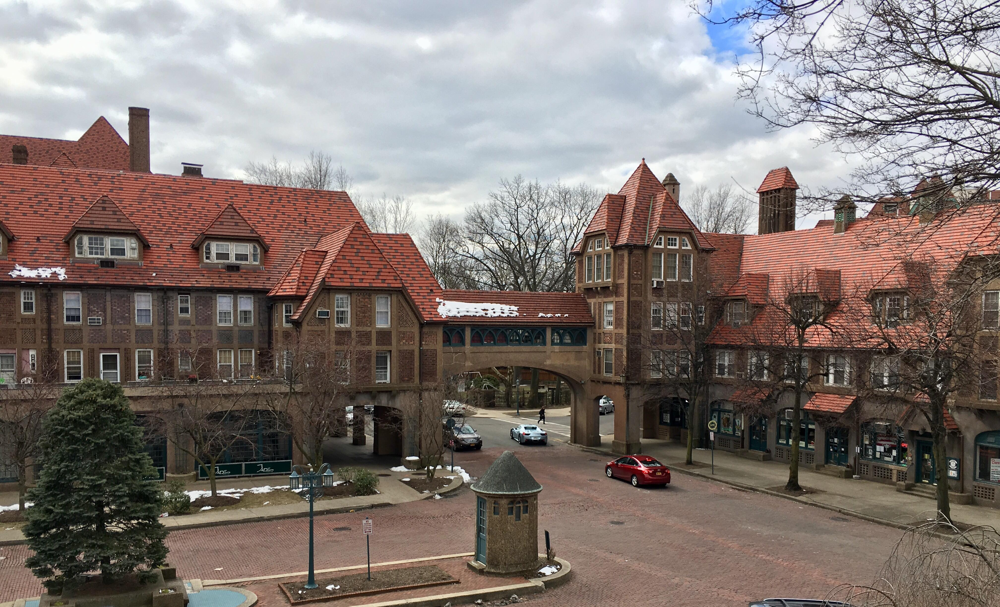
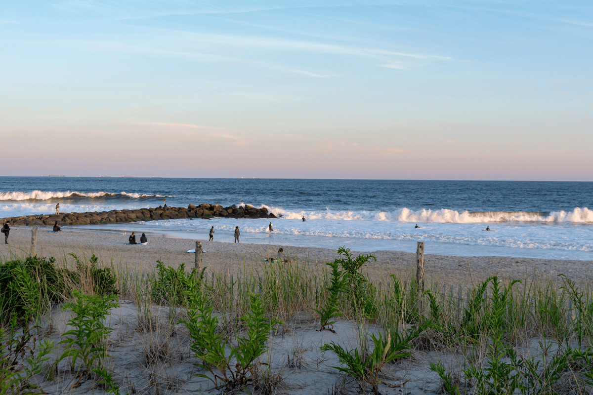

I live in Forest Hills, Queens. Thats all.
I usually spent days going to this specific park with my friends (who are now in college) to play sports and just hang out.

I've went to Rockaway Beach many times in the past. The beach is pretty nice, but is especially nice when there is less people and no sharks in the water.
©Ethan Huang